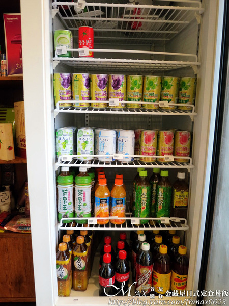

金藏屋日式定食丼飯鍋物」位在南投市南崗三路上。 與成功二路的轉角處，前身是國旺自助餐，是在地的老店。 路上的二旁老實說吃的沒有很多，開車或騎車也很容易錯過。
一踏進門的左手邊有個偽櫻花的佈置。 有板凳可讓等候的客人稍作休憩用，別具小巧思。
店內的空間寬敞度適中，桌間距不會過於擁擠。 簡約典雅的風格，牆面掛上不少畫作，居然是拼圖，有加分的作用。 除了有2人、4人和6人桌外，也有面牆的座位，哪怕一個人來吃也很合宜。
靠牆邊有個木櫃子，上面擺滿了好多來自日本的產品。 有雪肌粹洗面乳，一風堂泡麵、薯條三兄弟、馬油和最新的國際牌吹風機等。 看了超心動，都是店家固定會去日本親自買回來販售的，有興趣可以來看看。
冰箱內還有飲品和微醺系列可選擇。
櫃台處放的壽司，是店家每天現捲販售。 那天回家有買一盒回去給家人吃，老媽和姪女說很不錯。
每一桌的桌面都附上的冰麥茶。 但因為我當天感冒，店家也有提供熱麥茶，很貼心。
金藏屋的menu有定食、丼飯、鍋物、烏龍麵和單點的。 套餐皆附有小菜及味噌湯，價格在128元-260元不等。 如想二人共鍋加收30元，畫好單再到櫃檯結帳即可。
好友點的壽喜燒鍋物，肉片有牛肉與豬肉的選擇，選了豬肉。 附上小菜，湯品和鍋物，相當的豐盛。
盛裝的以木質的托盤，很有質感。 每一樣的餐食以不同的餐具來呈現，味道很搭。
小菜根據店家的說法每天會製作至少10來種。 每一種都是店家自製，出菜的話是隨機的。 喜歡第一道小菜的秋刀魚，肉質細緻，魚骨酥熬到也可以吃，很美味。
凡點定食和鍋物還會附上茶碗蒸、糖心蛋和溫泉蛋3種其中1種。 糖心蛋餡是半熟的狀態，蛋白軟Q，一起入口好幸福。
肉片雖是冷凍現切，但放入鍋內煮後還是保有很大一片。 不像外面市售很多煮後變得超薄超小，肉質帶油花有嚼勁。
將將將將～壽喜燒的主角，鍋內滿到出來的火鍋料，有點誇張的多。 有肉羹、蛋餃、花椰菜、菇類、米血、蝦子、花枝和高麗菜等。 底下的壽喜燒湯頭有別於一般既定印象的壽喜燒火鍋以醬油為底。 金藏屋是用醬油、多種蔬菜並加入一種祕密武器下去熬製。 湯頭不建議喝，有點略鹹，但有種獨特的香氣，搭配火鍋很對味呢！
湯品是味噌湯，湯頭濃郁。 裡面有豆腐和海帶，熱熱喝很不錯。
附有三樣小菜、味噌湯和一碗滿滿的牛五花丼飯。 光視覺的部份就讓人覺得好誘人。
小菜與好友的鍋物附的又不太一樣。 特別喜歡韓式泡菜，酸度夠，帶脆口又有辣勁，好好吃。 另外店內也有在販售瓶裝的，有韓式辣味和黃金不辣的。
選用牛五花，搭配大量的蔥花，還有半熟蛋。 淋上特製熬煮的醬汁，底下是滿滿的白飯就大功告成。
牛五花口感鮮嫩帶紮實，因醬汁的關係吃起來甜甜的。 與蔥花、洋蔥和白飯大口吃下，層次很豐富。 有蔥花的香氣、洋蔥的甜味與半熟蛋的滑順，沒多久就被我嗑光，好喜歡。 另外雞蛋建議可以直接打一顆新鮮生的在上面，這樣會更犯規。 這樣一份才128元，真的很划算，很推薦有來點這道準沒錯。
雞腿肉買回來有先處理過，客人點餐會先乾煎過。 再佐上照燒醬去調味，灑上白芝麻和辣椒絲。 外皮QQ的，雞腿肉軟嫩多汁，不會柴，味道甜甜，滋味算有到位。
嚴選新鮮的鯖魚，先煎後烤，表皮微酥，肉質細緻有油脂。 吃進嘴裡的香氣四溢，十分鮮美，很適合來瓶啤酒微醺一下。 也可擠上檸檬或佐上胡椒粉別有一番風味，好吃喔！
單點的茶碗蒸，是現蒸現做，會需稍等候一下。 蒸蛋綿密滑嫩，蛋香味足，有用高湯來提味。 內餡有松阪豬肉、蛤蜊和白果，表面多了黑豆和魚板裝飾，超值美味。
點任一主餐皆附的餐後水果，今日是蓮霧和奇異果。 水果好香甜，均衡營餋一下。
引自:http://blog.yam.com/fbmax0623/article/119551135